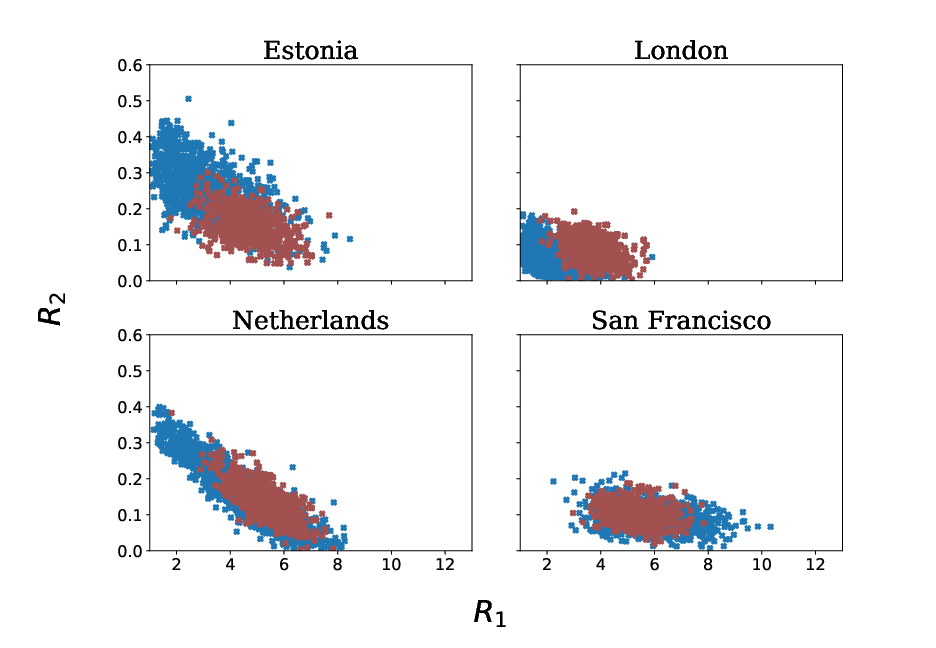
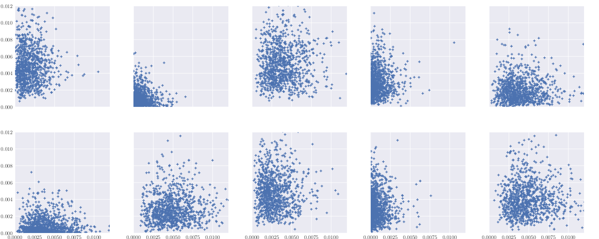

Selected Works

Rethinking pooling in graph neural networks
Diego Mesquita, Amauri Holanda and Samuel Kaski
[manuscript, code]
NeurIPS 2020

Embarrassingly parallel MCMC with deeep invertible transformations
Diego Mesquita, Paul Blomstedt and Samuel Kaski
UAI 2019

Meta-analysis of Bayesian analyses
Paul Blomstedt, Diego Mesquita, Jarno Lintusaari, Tuomas Sivula, Jukka Corander and Samuel Kaski
arXiv:1904.04484
For a full list, have a look at my Google Scholar page.